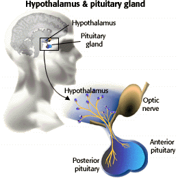

Human Reproduction Problem Set
Problem 4: Pituitary hormones
Tutorial to help answer the question
| What pituitary hormone(s) control ovulation and production of female hormones by the ovary? |
Tutorial
Female hormones
|  |
Pituitary gland
The pituitary gland has two sections: the posterior and the anterior pituitary. These sections have different origins and produce different hormones. The posterior pituitary derives from nervous system tissue and produces neurohormones. The anterior pituitary derives from the epithelial tissue and produces hormones with endocrine functions.
Hormones
This causes the anterior pituitary gland to start producing follicle stimulating hormone (FSH) and lutenizing hormone (LH.) These gonadotropins stimulate the production of the sex hormones estrogens and progestins. It is the interaction of the gonadotropins and the sex hormones that controls the reproductive cycle. |


University of Arizona
Updated: July 15, 1999
Contact the Development Team
http://biology.arizona.edu
All contents copyright © 1996-99. All rights reserved.